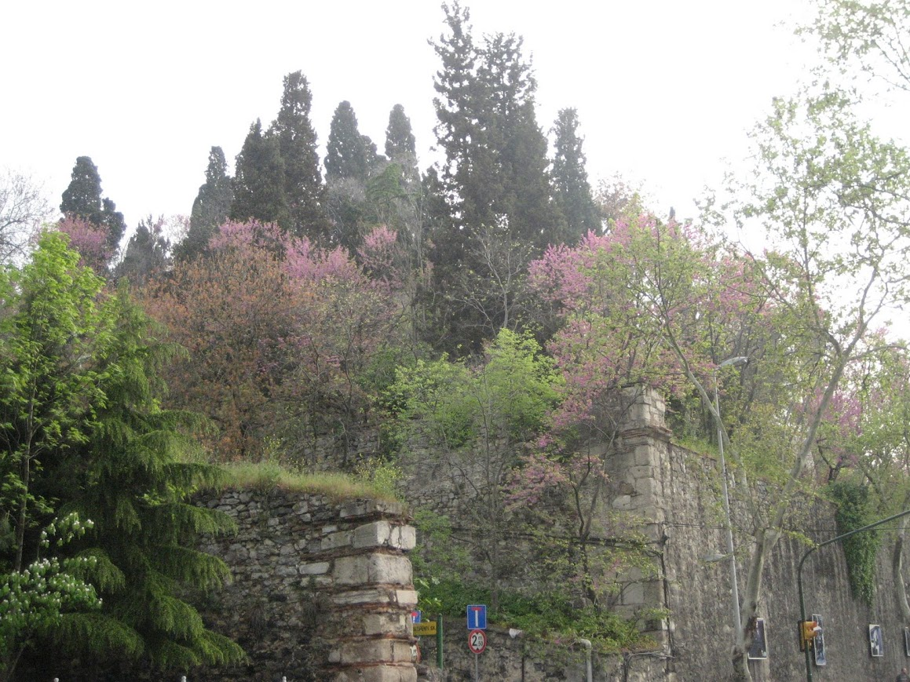
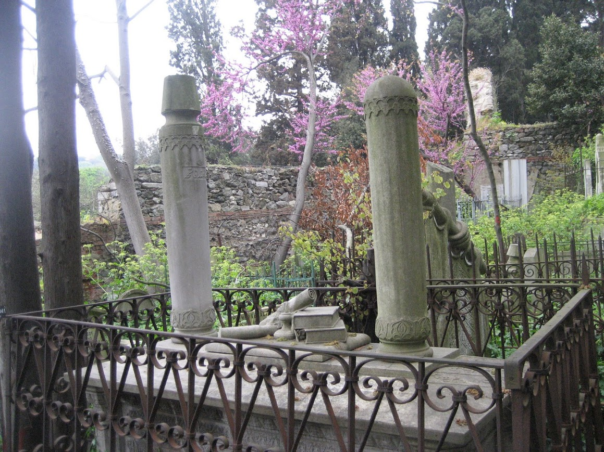

(ana sayfaya
dön)(arka komşum) Yahya EfendiAdemün bünyâdını kıldukda HakSanmanız ki eyledi bi-hendese Taliba ömrün mühimme sarf kıl Yelme hayranlar gibi olmaz sese Yol mıdur İslâm ehli âkibet Olalar muhtac cuhud-ı nakese  .... tekkesinin yanında inşa ettirdiği
medresede Âşık Çelebi'nin de belirttiği üzere, "her
fenden istifâde eden yüz kadar talebesi" mevcuttur.
Hatta Aşık Çelebi, astronomi, matematik ve geometride
Yahya Efendi'nin zamanının en mühim isimlerinden biri
olduğunu, geometride Micasti (Almagest, Ptolemy) ve
Uklidis'den üstün olduğunu söyler.... (BEŞİKTAŞLI
YAHYA EFENDİ, Müslüm Yılmaz, Dergâh Yayınları, 2014).
Menkıbelerine göre Yahya Efendi Rumca da bilir ama
Batlamyus ve Uklidis'i o devirde bilinen yegâne
nüshaları olan Arapça tercümelerinden okumuş
olmalıdır.
Yukarıda "Hak insanın temelini atarken hendesesiz (geometri) yaptı sanmayın!" diyen Kanuni'nin süt kardeşi Yahya Efendi'den (1495-1571) bize intikal eden beyitleri olsa da bildiğim kadarıyla teoremi yoktur. Hiç olmadığından mı, yoksa kimse onları aktarmaya değer bulmayınca kaybolup gittiklerinden mi? Aynı eserde, Galatasaray Üniversitesi Matematik Bölümü'nün arkasındaki tepede yer alan tekkenin burada meskun bazı keşişlerden istimlâk edildiği yazar -kimbilir onlar da bin sene evvel pagan rahipleri yerinden ederek oraya yerleşmiştir!-. Feriye köşkünden Çırağan sarayına kadar kalan bölgenin bu arazi içinde yer aldığı rivayet olunur.  Mezkûr mısra Da Vinci'nin (1452-1519) insan vücudunun nispetlerini gösterdiği meşhur Vitruvian Adamı çizimini çağrıştırıyor.. ki bu nispetler de meşhur Romalı mimar Marcus Vitruvius Pollio'nun (MÖ 80-10 civarı) De Architectura kitabından alınmıştır. Acaba Yahya Efendi Vitruvian adamı'nı görmüş müdür? Yoksa bu beyitte neyi kastetmektedir? Son beyit, Devlet-i Ali'nin zirvede olduğu dönemde yazılmış olması itibarıyla ayrıca dikkat çekicidir. İlk başta, günümüzde onu okuyan matematikçiye sanki hendese bilgisinin eksikliğinden şikayet eder gibi görünse de, tahminimiz tababette Osmanlı tebası gayrimüslimlere muhtaç kalmanın kastedildiği istikametindedir. Kanaâtimiz; ilk beyit de tababet bağlamında tevil edilmelidir. Ancak tabiplerimizin kendisine sahip çıktığına dair bir emâre bilmiyoruz.  Şunu da eklemeliyiz ki, Roma ve Bizans'ın da matematikteki sicili pek parlak değildir: Van der Varden'in tabiriyle, 4 ve 5. asırlardak bazı katkılar olsa da “bu son pırıltılardan sonra Grek matematiği bir mum alevi gibi sönmüştür". Yahya Efendi'nin çağında Grek matematik geleneği çoktan Halifeliğe intikâl etmiş, oradan bir kısmı Orta Asya aydınlanmasına geçmiş, sonra da kitaplar kalsa da gelenek yitip gitmişti. Uklidis'i okuduğunu bildiğim bir başka sufi de, Füsus'ta ondan "Hekim" diye bahseden İbni Arabi'dir (1165-1240). Madem ki yukarıdaki beyitleri söylemiş, Yahya Efendi'nin ilmi mirasına asıl biz matematikçiler talibiz! Yahya Efendi'nin hendese çalışmaları hakkında malumatı olanlar şahsıma bildirirse minnettar kalırım. Yukarıda arzolunan malumat hakkındaki tenkit ve tashihleri de mutlaka duymak isterim. Klasik eğitim veren medreseler dışında "her fenden istifâde eden yüz kadar talebesi" olan, kökleri Bizans'a dayanan (keşişler) bu kurum; şartlar müsait olsaydı belki bir üniversitenin temelini teşkil edebilecekti. Neden edemedi? İhtimal, zaman içinde tekkenin sûfî hüviyetinin baskın çıkmasıdır. Merak ettiğim bir başka husus, tekkesinde yetişen yüzlerce talebenin Osmanlı devlet teşkilâtında veya ilmiye sınıfında nerelere geldiği, ne gibi işler icra ettikleridir. 
(Lahitin üzerindeki kitaplara dikkat ediniz.. Acaba kimdir? ) |